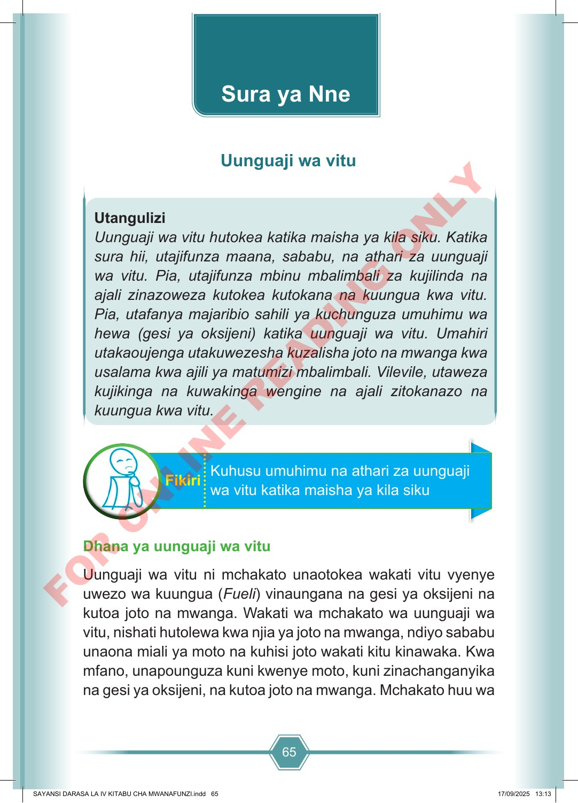

65 Utangulizi Uunguaji wa vitu hutokea katika maisha ya kila siku. Katika sura hii, utajifunza maana, sababu, na athari za uunguaji wa vitu. Pia, utajifunza mbinu mbalimbali za kujilinda na ajali zinazoweza kutokea kutokana na kuungua kwa vitu. Pia, utafanya majaribio sahili ya kuchunguza umuhimu wa hewa (gesi ya oksijeni) katika uunguaji wa vitu. Umahiri utakaoujenga utakuwezesha kuzalisha joto na mwanga kwa usalama kwa ajili ya matumizi mbalimbali. Vilevile, utaweza kujikinga na kuwakinga wengine na ajali zitokanazo na kuungua kwa vitu. Kuhusu umuhimu na athari za uunguaji wa vitu katika maisha ya kila siku Fikiri Dhana ya uunguaji wa vitu Uunguaji wa vitu ni mchakato unaotokea wakati vitu vyenye uwezo wa kuungua (Fueli) vinaungana na gesi ya oksijeni na kutoa joto na mwanga. Wakati wa mchakato wa uunguaji wa vitu, nishati hutolewa kwa njia ya joto na mwanga, ndiyo sababu unaona miali ya moto na kuhisi joto wakati kitu kinawaka. Kwa mfano, unapounguza kuni kwenye moto, kuni zinachanganyika na gesi ya oksijeni, na kutoa joto na mwanga. Mchakato huu wa Sura ya Nne Uunguaji wa vitu SAYANSI DARASA LA IV KITABU CHA MWANAFUNZI.indd 65 SAYANSI DARASA LA IV KITABU CHA MWANAFUNZI.indd 65 17/09/2025 13:13 17/09/2025 13:13 F O R O N L I N E R E A D I N G O N L Y